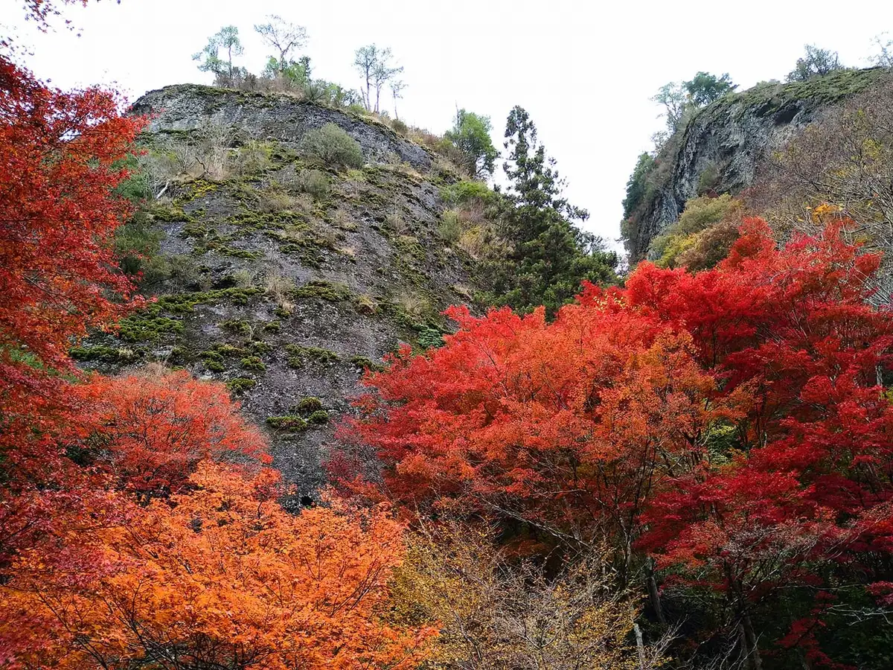
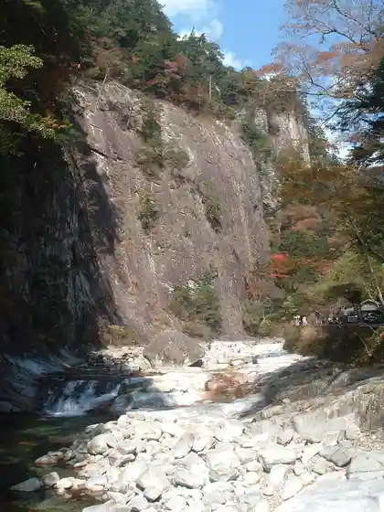
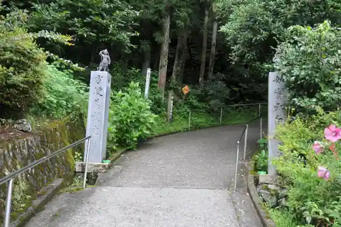
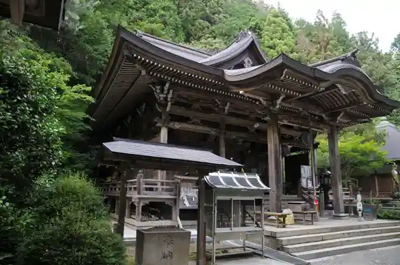

Kumakogen
Kumakogen · Ehime
Kumakogen
Highlighted on the Ehime map.

Stay
Kokuminshukusha Ko Iwaya So
Yasuragi no Yado Denko
Iyashi no Yado Hatcho Saka
Kokuminshukusha Ishizuchi
Dining
Naso Ba Wakamiya
Sansanpan Workshop
Garden Taimu
Takemori Garden
Toki Asobi Uzu
Kuma no Chaya Mahora Ha
Kuma Kafe
Ninepy
Omogo Chaya
Kaferesutoran
Resutoran Sansan
An
Aniki no Sauna
Yoshinoya Kashi Ho
Highlands Gorufu Kurabu
Chuka Soba Tsuruhime
Onsen
Kokuminshukusha Ko Iwaya So Public Bath
Yasuragi no Yado Denko O Furo
Iyashi no Yado Hatcho Saka O Furo
Kokuminshukusha Ishizuchi Public Bath
Sights
Ko Iwaya
Omogo Kei

Iwaya Tera

Taiho Tera
